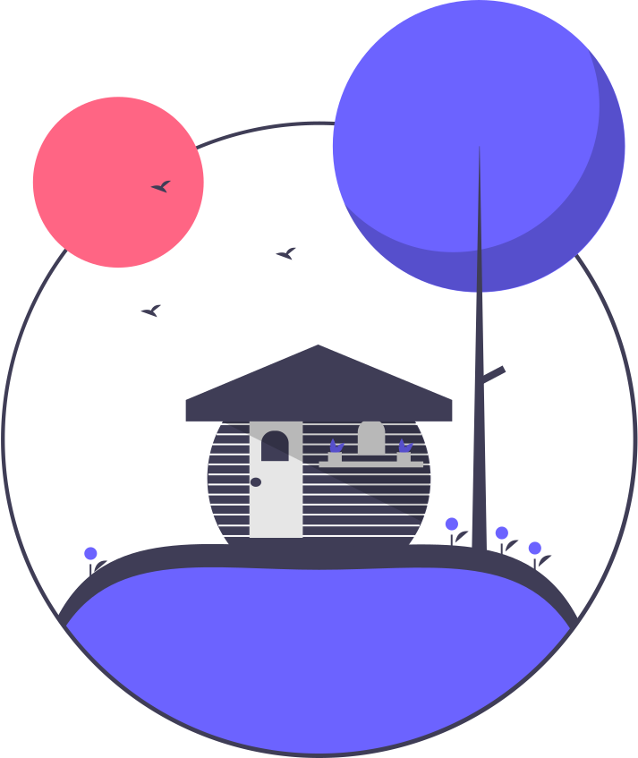

On-Going Projects
Household Task Manager
Users can create custom task lists, assign tasks to individuals, and mark tasks as complete. I used my skills in HTML, CSS, PHP, SQL, and PHPMyAdmin to create an intuitive interface and handle complex data management tasks.
 DemoProject Manager
Users can create and customize their task lists, assign tasks to specific members, it allows users to track project progress, set deadlines, and mark tasks as complete.
 Demo
Demo